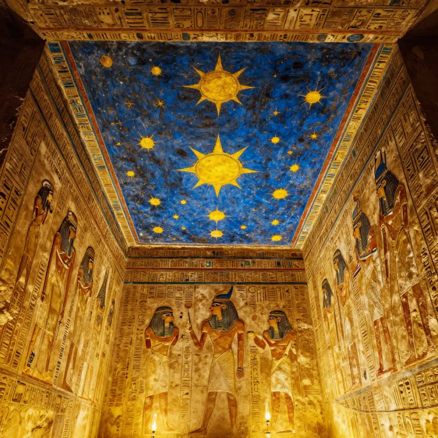
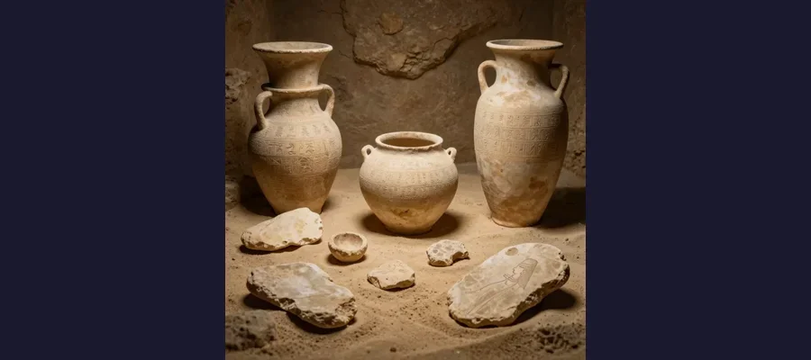

Thutmose II Tomb: The Lost Pharaoh Found!

The entrance to the tomb of Thutmose II, discovered in Luxor, Egypt in 2025.
In February 2025, Egypt announced a discovery that shocked the archaeological world: the tomb of Thutmose II, a pharaoh who ruled around 3,500 years ago. This is the first royal tomb found since Tutankhamun's was discovered in 1922 - over 100 years ago!
Overview
Who Was Thutmose II?
Thutmose II was a pharaoh of Egypt's 18th Dynasty, ruling from approximately 1493 to 1479 BCE. He was the husband of the famous Queen Hatshepsut, one of Egypt's most powerful female rulers. Despite his royal status, his tomb had remained hidden for millennia - until now.

The tomb's ceiling still bears ancient decorations after 3,500 years.
🏛️ A Century in the Making
The last royal tomb discovered in Egypt was Tutankhamun's in 1922. That's over 100 years between major royal tomb discoveries!
Evidence
A useful way to read this evidence is by confidence level. High-confidence points are independently confirmed by multiple sources; medium-confidence points are plausible but debated; low-confidence points stay provisional until stronger data appears.
Historical work on Thutmose II Tomb is strongest when primary records, material traces, and later peer-reviewed analysis point in the same direction. This layered approach helps separate observations from retellings and reduces the risk of repeating popular but unsupported claims.
How Was It Found?
A joint Egyptian-British archaeological team discovered the tomb in the Theban Mountains near Luxor. The tomb had been damaged by flooding in ancient times, which may explain why it was overlooked by tomb robbers and archaeologists alike.
🌊 Flood Damage
Ancient floods filled the tomb with debris, which actually helped preserve some artifacts while making the tomb harder to find!

Archaeologists carefully excavating artifacts from the ancient tomb.
Competing Explanations
Competing explanations usually persist because each one fits part of the evidence while missing another part. Researchers test these models against chronology, physical constraints, and independent documentation to identify which interpretation requires the fewest assumptions.
What Did They Find?
Inside the tomb, archaeologists found fragments of alabaster jars inscribed with Thutmose II's name, along with pieces of funerary furniture and pottery. The tomb's architecture and decorations match the style of other 18th Dynasty royal tombs.
🏺 Inscribed Jars
Alabaster jars found in the tomb bear the name of Thutmose II and his wife Hatshepsut, confirming the tomb's owner!
Open Questions
As new datasets and publications appear, the strongest updates usually come from transparent methods and independently checkable evidence rather than dramatic single-source claims.
For that reason, responsible coverage separates what is known, what is probable, and what is still uncertain. That structure keeps the story engaging while protecting factual accuracy.
Open questions remain because source quality is uneven across time: some records are direct and detailed, while others are fragmentary or second-hand. Future archival discoveries, improved imaging, and more precise dating methods may refine conclusions without overturning well-supported core findings.
Current conclusions rely on the strongest available records and analyses, while some details remain provisional until additional evidence is published.
Archaeologists are still determining how much of the original burial assemblage remains in place, which artifacts were displaced by ancient flooding, and whether nearby areas contain associated structures tied to the same royal complex.
Future excavation seasons and conservation reports will clarify chronology, ritual use, and connections to neighboring 18th Dynasty tombs.
Why Is This Important?
This discovery helps fill gaps in our understanding of Egypt's 18th Dynasty, one of the most powerful periods in ancient Egyptian history. It also shows that even after centuries of exploration, Egypt still has secrets to reveal.
The tomb of Thutmose II proves that there are still major archaeological discoveries waiting to be found!
References & Further Reading
Editorial note: We cross-check claims across multiple independent sources. See our Editorial Policy.